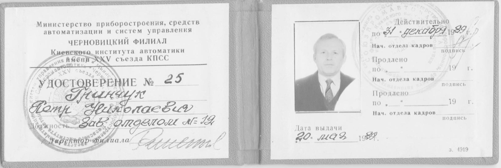

ЗМІСТ
- Професійна діяльність
- Перші кроки інженерної роботи
- Що таке геофізичний магнітометр?
- Помножувач частоти сигналу прецесії
- Частотомір на мікросхемах
- Помножувач частоти з ФАПЧ і дільником частоти в зворотньому зв'язку
- Протонний аеромагнітометр ЯМП-2
- Цифровий фільтр для морського гравіметра
- Робота в СКТБ ВТ "Електронмаш"
- Модуль автоматичного розпізнавання голосових команд
- Робота в Чернівецькому Філіалі Київського Інституту Автоматики
Про себе
Професійна діяльність
Свою професійну діяльність я почав з жовтня 1970 року після закінчення Чернівецького Державного Університету (ЧДУ).
Нині Чернівецький Національний Університет (ЧНУ). Я закінчив фізичний факультет, кафедру оптики і одержав професійну орієнтацію: фізик-оптик, оптик-спектроскопіст.
Життєві обставини заставили мене переїхати з Чернівців в Казахстан, м. Алма-Ата (тоді столиця Казахстану), де проживала моя мама і мала квартиру. На той час я вже був
одружений, моя дружина була вагітна і ми очікували першу дитину.
По своїй спеціальності в місті Алма-Ата мені не вдалось влаштуватись на роботу. Але випадково мамин сусід запропонував мені
звернутись на завод «Казгеофизприбор» де було конструкторське бюро геофізичних приладів. Іншого вибору не було і я звернувся з
приводу працевлаштування в «КБ Казгеофизприбор».
Перші кроки інженерної роботи
Мене прийняли у відділ магніторозвідки з охотою, бо саме тут планувалась розробка
магнітометрів з оптичними датчиками. Почав я свою працю з посади інженера-конструктора третьої категорії з окладом в 105 рублів.
З невідомих мені причин розробку магнітометрів з оптичними датчиками відхилили і мені доручили вперше у відділі освоювати
застосування мікросхем. До цього часу вся електронна частина магнітометрів конструювалась з використанням транзисторів.
Що таке геофізичний магнітометр?
Тепер я поясню що таке геофізичний магнітометр і які принципи його роботи.
Серцем геофізичних магнітометрів, які розроблялись у нашому відділі був ядерно-прецесійний тороїдальний датчик.
Він являв собою замкнутий полий тор із органічного скла в який заливали чистий керосин або іншу рідину, яка містить протони. Зверху тора намотувалась обмотка з мідного дроту
діаметром приблизно 1-1,5 мм. Намотка здійснюється впритул виток до витка в декілька шарів.
Кінці цієї обмотки підключались до електронного блока з потужним електронним
токовим ключем. В момент вимірювання напруженості магнітного поля обмотка підключається до потужного джерела постійної напруги зі струмом декілька ампер (так званий струм
накачки). В результаті всередині тора створюється потужне магнітне поле. Магнітне поле діє на спіни протонів і орієнтує їх вздовж радіуса тора. Якщо тепер різко відключити
струм від обмотки, то магнітні спіни протонів починають прецесіювати з частотою пропорційною напруженості геомагнітного поля, яке діє в зоні датчика. Ця групова прецесія
магнітних спінів рідини наводить в обмотці датчика електричну напругу мікровольтової величини і звукової частоти (1-3 кілогерци). Внаслідок хаотичного броунівського руху
прецесія спінів атомів рідини швидко затухає (мілісекунди). Тому потрібно зуміти швидко виміряти частоту прецесії протонів, яка зв’язана з напруженістю магнітного поля,
яке вимірюється. Для цього електронний ключ підключає обмотку датчика до чутливого підсилювача напруги. Підсилений сигнал звукового діапазону подається на частотомір.
Але не все так просто! Справа в тому що сигнал прецесії дуже швидко затухає, за декілька десятків мілісекунд. А період вимірюваного сигналу складає від (0,3 до 1 мсек).
Тому виміряти з високою точністю частоту сигналу за декілька десятків мілісекунд частотоміром не можливо. Вихід з цієї проблеми інженери знайшли: помножити частоту
вимірюваного сигналу в 1000 і більше разів! Відповідно і точність вимірювання частоти сигналу збільшується в стільки ж раз. Таким чином в системі геофізичного магнітометра
крім протонного датчика, електронного комутатора і чутливого підсилювача потрібен блок помножувача звукової частоти в тисячу раз!
Помножувач частоти сигналу прецесії
Це досить складна задача. В той час коли я почав працювати в КБ «Казгеофизприбор» цю проблему вирішували прямо в лоб. Початковий сигнал з підсилювача формували до П-подібної форми і далі LC фільтрами вифільтровували
другу гармоніку. Тобто, початкову частоту датчика подвоювали. А далі подвоєну частоту сигналу подвоювали таким же способом. І так 10 каскадів подвоєння частоти давали помноження початкової частоти в 1024 раз. Всі ці множення частоти виконувались на
RLC фільтрах і транзисторах. Спеціалісту зрозуміло яка це була велика, складна і нестабільна конструкція.
Тому у керівника відділу виникла задача концептуально змінити підхід до множення частоти і перейти на мікросхеми, які тоді тільки
появились за кордоном (в США і Канаді).
Частотомір на мікросхемах
Тому мені, як молодому спеціалісту, доручили освоїти перші гібридні мікросхеми, які підпільним шляхом добули за кордоном.
Першим блоком, який мені доручили розробити, був частотомір на гібридних мікросхемах і відображенням частоти на цифрових лампах.
Кожна така газорозрядна лампа могла показувати цифри від 0 до 9 червоним світінням. На анод лампи подавалось 100 вольт постійного струму,
а 10 катодів керувались високовольтними транзисторами. Так як частота помноженого в 1024 раз сигналу могла досягати декілька мегагерц, то таких цифрових ламп в блоці частотоміра було 7.
Я успішно реалізував такий частотомір на американських гібридних мікросхемах. Він виявився в десятки раз меншим по габаритах від транзисторного.
Таким чином я позитивно себе зарекомендував в очах колег по відділу.
Помножувач частоти з ФАПЧ і дільником частоти в зворотньому зв'язку
Наступним блоком який мені доручили розробити був помножувач частоти. Потрібно було знайти нову концепцію множення частоти.
Така концепція була реалізована в канадському пішоходному магнітометрі. В той час в Москві була виставка канадських геофізичних
приладів і систем. Мене направили в Москву на виставку, де я в розмовах з гідами дізнався про концепцію цифрового помножувача частоти.
Вона напрочуд проста і складається з цифрового генератора меандра електрично керованого напругою (ГУН) в діапазоні декількох мегагерц,
дільника частоти в 1024 раз на 10 трігерах, фазового детектора на логічному елементі (исключающее ИЛИ) і RC фільтра нижніх частот (ФНЧ) ,
з виходу якого напруга керує частотою ГУН. Меандр вхідної частоти подається на один вхід фазового детектора, а поділена частота ГУН
подається на другий вхід фазового детектора. Частота ГУН підбирається такою, щоб поділена на 1024 ця частота була близькою
до частоти сигналу з датчика. Тоді фазовий детектор і фільтр підстроюють ГУН до частоти Fгун = 1024*Fвх.
Такий помножувач використовує ФАПЧ (Фазаве автоматичне підстроювання частоти) реалізоване на ГУН, фазовому детекторі
(в даному випадку логічний елемент Исключающее ИЛИ) і RC-фільтрі . Основна проблема тут полягає в тому, щоб динамічні характеристики
ГУН і фільтра забезпечували швидку підстройку частоти Гун поки існує вхідний сигнал (десятки мілісекунд).
В момент точної підстройки частоти ГУН напруга з виходу фільтра запам’ятовується на конденсаторі з МОП ключами і час вимірювання
може складати секунди. Цим досягається величезна точність вимірювання частоти.
Такий помножувач частоти був мною реалізований. Він по габаритах складав соту долю попередніх помножувачів на транзисторах і RLC фільтрах.
А стабільність його роботи була більш ніж потрібно було. Цей помножувач став основою наступних моїх розробок.
Протонный аэромагнитометр ЯМП-2
На основі цих розробок нашим відділом магніторозвідки КБ “Казгеофизприбор” був розроблений комплекс “Протонный аэромагнитометр ЯМП-2”,
який серійно виготовлявся заводом. На той час в СРСР уже почали серійно випускати цифрові мікросхеми серій 155, 133, 134, аналогові серії 140.
Саме на цих мікросхемах було реалізовано блок частотоміра для вимірювання частоти сигналу прецесії.
Про цю розробку була публікація в журналі “ПРИБОРЫ И ТЕХНИКА ЭКСПЕРИМЕНТА” АкадемІЇ НАУК СРСР,
№4 за 1974 рік, в розділі «НОВЫЕ ПРИБОРЫ».
Протонный аэромагнитометр ЯМП-2 предназначен для измерения абсолютного значения модуля полного вектора геомагнитного поля с самолета АН-2
при жёстком (на киле) или выносном (в буксируемой за самолётом гондоле) вариантах установки магнито-чувствительного датчика.
Благодаря применению системы бесконтактной синхронной поляризации образца и фазокогерентной схемы умножителя частоты прецессии (Ку = 1024),
а также конструкции датчика и входных цепей, прибор обеспечивает точность измерения поля в 1 гамму при 4 измерениях/сек и
0,5 гамм при 2 измерениях/сек. Диапазон измеряемых полей от 0,2 до 10,0 э. Показания прибора в единицах напряжённости геомагнитного поля выводятся на 6-разрядное
световое табло, двухканальный аналоговый самописец (в масштабе 0,25 гамм/мм и 2,5 гамм/мм) и на ленточный перфоратор ПЛ-80 в коде ЭВМ «Минск-32».
Электронная часть прибора выполнена на интегральных микросхемах серий 133: 1ЛБ533, 1ЛБ534, 1ЛБ531, 1ЛБ532, 1ЛБ536, 1ЛБ533,
а также серии 140: 1УТ401 и 1УТ402. Конструкция прибора блочная; монтаж осуществлен на двухсторонних печатных платах.
Прибор питается от бортсети самолета (27 В постоянного тока) или от сети 220 В, 50 Гц.
Внешний вид комплекса "Протонный аэромагнитометр ЯМП-2" при установке датчика в выносной гондоле представлен на рисунке.
Протонный аэромагнитометр ЯМП-2

Разработчики: В. А. Реут, Ф. Н. Свядищ, С. Я. Квитко, П. Н. Гринчук, С. Жанакбаев, В. Ф. Власов
За справками следует обращаться по адресу: 480716, Алма-Ата, Красногвардейский тракт, 89-а, завод «Казгеофизприбор».
Нижній блок з цифровим табло являє собою частотомір частоти прецесії, розроблений мною, П. Н. Гринчук.
Цифровий фільтр для морського гравіметра
Після успішної розробки Протонного аеромагнітометра ЯМП-2 і демонстрації його на виставці геофізичних приладів і комплексів на ВДНХ в Москві, мене в КБ "Казгеофизприбор"
атестували і присвоїли професійний рівень інженер-конструктор другої категорії, а нашому відділу запропонували розробку цифрового фільтра для морського гравіметра.
З цією пропозицією звернулась група вчених геофізиків Московського Институту Геофізики під керівництвом доктора наук Іванкіна.
Що таке морський гравіметр?
Тепер я повинен пояснити що таке морський гравіметр. Взагалі геофізичними гравіметрами вимірюють значення сили земного тяжіння в даній точці Землі.
Для цього використовують різні принципи. Один із цих принципів використовує коливання струни в магнітному полі, так звані "струнні гравіметри". Справа в тому, що частота
коливання струни в магнітному полі залежить від сили прискорення яке діє на струну. Перевага струнних гравіметрів у тому, що вимірювання сили тяжіння зводиться до вимірювання
частоти коливання струни. А це вимірювання можна здійснити з високою точністю. В струнному гравіметрі міститься струнний генератор. Конструкція струнного генератора включає
невеликий відрізок стальної струни натягнутої невеликим грузом і розміщеної між полюсами магніта. На магніті намотана котушка з тонкого мідного дроту. Електронна схема струнного
генератора сконструйована так, що в ній виникають неперервні коливання. В результаті коливання стальної струни в магнітному полі, в котушці виникає змінний електричний сигнал
частота якого зв'язана з силою земного прискорення (тяжіння) "g". Вимірюючи частоту коливання струни частотоміром і знаючи залежність між частотою коливання і силою земного
прискорення (тяжіння), можна виміряти "g".
Якщо говорити про конструкцію морського гравіметра в цілому, то це складна конструкція в якій струнний генератор стабілізується по температурі електронним термостабілізатором,
до сотих долей градуса, а положення його в просторі стабілізується гіроскопічною системою, так званою гіроплатформою. Морський гравіметр сигнал якого нам потрібно було обробляти
повністю сконструйований і виготовлений групою московських геофізиків. На наш цифровий фільтр поступав тільки сигнал частоти струнного генератора з виходу гравіметра.
Мої розробки частотоміра для Протонного аеромагнітометра ЯМП-2 виявились дуже необхідними і для Морського струнного гравіметра. Тому саме до КБ "Казгеофизприбор" звернулись
московські геофізики. Хочу зауважити, що вимірювання гравітаційного поля Землі в той час було дуже актуальним у зв'язку з тим, що наведення балістичних ракет по гравтаційному
полю набагато надійніше ніж по магнітному. Магнітне поле землі нестабільне порівняно з гравітаційним. Тому в той час в СРСР велись засекречені роботи по скануванню
гравітаційного поля Землі саме з метою складання детальної карти гравітаційного поля по якому можна було наводити міжконтинентальні балістичні ракети. Група московських геофізиків
була учасниками цих робіт.
Морські гравіметри встановлюються на морських суднах. Це значно ускладнює вимірювання гравітаційного поля струнними гравіметрами на плавучих платформах. Справа в тому,
що на струну діє як граітаційне прискорення, так і прискорення за рахунок коливань плавучої платформи на морських хвилях. Причому, при штормах це прискорення в
тисячі разів більше ніж прискорення за рахунок гравітаційного поля. Як виділити той слабий сигнал гравітаційного поля з тисячекратного хаосу коливань морських хвиль?
Виявляється вихід є! Це цифрова фільтрація частоти струнного гравіметра. Справа в тому що корисний сигнал змін гравітаційного поля по курсу судна складає тисячні - соті
долі герца (в залежності від швидкості судна по курсу), а зміна частоти струнного гравіметра за рахунок прискорень дії морських хвиль складають одиниці - десяті долі герц.
Таким чином потрібно відсікти корисну складову частоти гравіметра від тисячекратних збурень за рахунок дії морських хвиль. Математичні розрахунки і моделювання на ЕВМ
показали що для цього потрібен цифровий фільтр 10-го порядку!
Ідеологом такого фільтра став кандидат наук (на той час, 1975 рік), з групи московських геофізиків Стакло Анатолій Вацлавович. Ідея полягала в тому, що мій частотомір
щосекунди буде вимірювати значення частоти струнного гравіметра. Далі це значення передається в цифрову пам'ять. В цифровій пам'яті накопичується 100 таких показань
на протязі 100 секунд, а потім обчислюється середнє значення за 100 секунд. Це середнє значення за 100 секунд запам'ятовується. Таким чином "вікном" в 100 секунд зглажуються
наступні виміри частоти, які представляють зглажені значення прискорень гравіметра. З алгоритму роботи фільтра випливає, що в електроніці цифрового фільтру повинні бути
цифрові арифметичні блоки додавання, ділення цифрових данх. На той час (1975 рік) такі мікросхеми нам були не доступні. Обдумуючи як реалізувати такий алгоритм на доступній
нам елементній базі, я запропонував наступну структуру цифрового фільтра для струнного морського гравіметра. Імпульси частоти генератора струнного гравіметра подаються на
вхід багатокаскадного двійкового лічильника частоти, ємність якого в 128 разів (для зручності) більша ніж значення одного максимального відліку частотоміра. Ці імпульси
накопичуються в лічильнику на протязі 128 замірів, тобто на протязі 128 секунд. Тобто, в лічильнику накопичується сумарне число імпульсів на протязі 128 секунд.
Далі з лічильника код перезаписується в регістр зсуву вправо. Тепер легко знайти середнє значення частоти струнного генератора за 128 секунд шляхом зсуву
регістра на 7 розрядів вправо (фаховому інженеру з цмфрової техніки це зрозуміло). Старші розряди регістра зсуву являють собою середнє значення частоти струнного генератора
за 128 секунд. Таким чином девіація частоти струнного гравіметра зглажується (осереднюється) "вікном" в 128 секунд. Більш того, ці операції осереднення виконуються в двійковому
лічильнику і регістрі зсуву щосекунди. Тобто, "вікно" замірів "ковзає" безперервно по замірах частоти. Таким чином в старших розрядах регістра зсуву ми одержуємо щосекунди
середнє значення частоти струнного генератора на інтервалі в 128 секунд. Старші розряди регістра зсуву являють собою вихід даного цифрового фільтра. Девіація частоти на виході
такого цифрового фільтра зменшується порівняно з девіацією частоти на вході фільтра (двійкового лічильника). Цей алгоритм описує роботу одного каскаду такого цифрового
фільтра. Він являє собою цифровий фільтр першого порядку. В блоці повного цифрового фільтра струнного морського гравіметра використано 10 таких каскадів. Фільтр реалізовано
на мікросхемах 134 серії (мало споживає струму), які розміщені на друкованих платах. Таких плат в повному блоці цифрового фільтра десять. Плати з'єднані між собою каскадно.
Тобто, інформація з виходу попередньої плати подається на вхід наступної. В теорії цифрових фільтрів один каскад такого фільтра називається фільтром нижніх частот (ФНЧ)
першого (1-го) порядку. А всі десять каскадів реалізують ФНЧ фільтр 10-го порядку. Такий фільтр має дуже вузьку полосу пропускання і крутий схил затухання. Всі вхідні
частоти які більше 0.01Гц будуть подавлені. В полосі пропускання залишається тільки корисний сигнал повільних змін гравітаційного поля по ходу руху судна по курсу.
З виходу останнього 10го каскаду фільтра код старших 8 розрядів регістра зсуву подається на 8-розрядний цифро-аналоговий перетворювач і через підсилювач подається на вхід
аналогового самописця, який в наглядному вигляді записує чорнилом на папері графік змін гравітаційного поля по курсу ходу судна. Паралельно цифрові дані фіксуються на
стрічковому перфораторі ПЛ-80 в коді ЕВМ "МІНСЬК-32" для наступної побудови карт гравітаційного поля планшетним "АТЛАС-2" (який теж серійно випускався заводом "Казгеофизприбор")
в стаціонарних умовах геофізичної партії.
Найбільш цікавим етапом цієї розробки були морські випробовування дослідного зразка Морського струнного гравіметра на Чорному і Балтійському морях у 1977-1978 роках.
Морський гравіметр був укомплектований нашими блоками: описаним цифровим фільтром, блоком живлення, блоком керування, самописцем і перфоратором ПЛ-80. Для випробовувань цей
комплекс встановлювався на риболовних сейнерах на Чорному морі і науково-дослідному судні "Академік Курчатов" на Балтійському морі. Початкові випробовування проводились на Чорному
морі разом з московськими геофізиками. Випробовування проводились декілька раз на рік в різні сезони (крім зими). База геофізиків була в м. Геленджик на Чорному морі. Коли
випробовування припадали на літній сезон, то між днями випробовувань ми чудово відпочивали: загорали, купались, катались на водних лижах. Москвичі і мене навчили держатись
на водних лижах. Серед них був чемпіон Москви з цього виду спорту. Але найбільш дружні відносини у мене склались зі Стакло Анатолієм Вацлавовичем, який запропонував алгоритми
роботи і структуру цифрового фільтра, електроніку якого я спроєктував. Були і малоприємні дні випробовувань, коли судно попадало в шторм. Морський гравіметр і наш комплекс
вимірювання і фільтрації встановлювався в трюмі риболовного сейнера. І коли в шторм починалися коливання судна, мій вестибулярний апарат не витримував такого знущання і я
моментально кидав слідкувати за показаннями приладів і вискакував на палубу. Там я міг відвести душу і "погодувати рибку" своїм сніданком чи обідом. Заключні випробовування
морського гравіметра з нашим комплексом цифрового фільтра проводились на Балтійському морі на науково-дослідному судні "Академік Курчатов". Там були шикарні умови, зручні каюти
і смачне харчування. На ньому було багато вчених і багато різноманітної наукової апаратури для морських досліджень.
Морські випробовування підтвердили ефективність і характнристики нашого фільтра, і можливість в реальному часі вимірювати значення земного гравітаційного поля по ходу курсу судна.
Раніше це не можливо було зробити в польових умовах. Для цього дані частотомірів записувались на перфоровану стрічку або магнітну стрічку на судні. Далі ці дані доставлялись на
обчислювальний центр геофізичної партії або Інституту. За сезон морських геофізичних досліджень цих даних накопичувалось дуже багато. Після закінчення сезону збору даних обробка
цих даних На ЕВМ продрвжувалась місяцями. Геофізики одержували результат своїх польових досліджень з великим запізненням. Коефіцієнт корисної роботи для геофізиків був дуже низьким
і повільним. Наша розробка давала в руки геофізиків ефективний інструмент, який в реальному часі і наглядно показував значення і зміни гравітаційного поля по курсу судна.
Про важливість і цінність цієї розробки для геофізиків свідчить розмір премії розробникам в кінці етапу успішної здачі "Цифрового фільтра" - 20000 рублів! При наших зарплатах
в 120 -200 рублів це була грандіозна для нас премія. Крім того цей цифровий фільтр захищено авторським свідоцтвом СРСР № 638969 від 28 серпня 1978 року.
АВТОРСЬКЕ СВІДОЦТВО НА ВИНАХІД

Після успішних випробовувань нашого цифрового фільтра атестаційна комісія КБ "Казгеофізприбор" присвоїла мені професійний рівень інженера-конструктора першої категорії.
ПОВЕРНЕННЯ В УКРАЇНУ
Життєві обставини 1978 року заставили мене з родиною повернутись з Казахстану в Україну. Я давно мріяв про це. На той час моя сім'я - це я, дружина і донечка Алла якій вже
виповнилось 7 років. Повернулись ми в рідне місто Чернівці, де проживала наша рідня. В Чернівці ми переїхали шляхом обміну квартир. Так що жити у нас було де. Встало питання
де працювати. На той час в Чернівцях вже відкрили декілька заводів мікроелектронного і приладобудівного профілю, в тому числі Чернівецьке Виробниче Об'єднання "Електронмаш".
Об'єднання "Електронмаш" складалось із заводу "Електронмаш" і Спеціального Конструкторсько Технологічного Бюро (СКТБ ВТ) обчислювальної техніки. В серпні 1978 року я влаштувався
в СКТБ ВТ на посаду інженера-конструктора першої категорії з окладом 140 рублів. Такий тоді був рівень оплат роботи інженера.
ЗАУВАЖЕННЯ:
В цьому тексті деякі абревіатури відповідають російській мові на якій тоді велась вся документація і назви підприємств
Робота в СКТБ ВТ "Електронмаш"
Стенди СКАМ-1 і СКАМ-2
Свідоцтво_1076897 на винахід
Основною продукцією заводу "Електронмаш" на той час були комплекси управляючої обчислювальної техніки для керування технологічними процесами підприємств, в тому числі
атомних електростанцій. СКТБ ВТ супроводжувало заводську продукцію у виробничому циклі: розробляло і виготовляло технологічні стенди для наладки електронних модулів з яких
складались комплекси, змінювало конструкторську документацію і програми при необхідності. Як правило це були раціоналізаторські пропозиції, які покращували параметри модулів,
або спрощували технологічні процеси виготовлення і наладки комплексів.
Мене прийняли в самий великий на той час відділ СКТБ ВТ. В ньому було на той час біля 40 інженерів, програмістів і техніків. Відділ був поділений на сектори: стендового
обладнання, розводки друкованих плат, сектор програмістів, сектор джерел живлення. Мене спочатку прийняли в сектор стендового обладнання. Цей сектор розробляв стенди для
налагоджування модулів що входили в склад комплексів.
Стенди СКАМ-1 і СКАМ-2
Деякий час я знайомився з продукцією заводу, технологією налагоджування модулів і комплексів, технологією роботи конструкторів СКТБ ВТ. Після періоду адаптації мені доручили
розробку Стенда Контролю і наладки Аналогових Модулів (СКАМ-1, СКАМ-2). Справа в тому, що в склад комплексів входили не тільки логічні модулі, але й аналогові модулі керування.
Їх наладка була найбільш складною, бо вони мали метрологічні параметри точності аналого-цифрового і цифро-аналогового перетворення. При наладці цих модулів в цеху потрібно
було з високою точністю регулювати їх метрологічні параметри. При налагоджуванні і контролі аналого-цифрових і цифро-аналогових модулів використовувались стандартні цифрові:
ампер-вольтметри, частотоміри, осцилографи. Тому в стойку стендів СКАМ-1 і СКАМ-2 були введені ці вимірювальні прилади. СКАМ-1 і СКАМ-2 відрізнялись номенклатурою налагоджуваних
модулів. На одному стенді можно було налагоджувати, або тестувати метрологічні параметри декількох різних модулів. Вибір типу модуля можна було вибрати багатопозиціонним
перемикачем на панелі стенда. Налагоджувані модулі підключались до стенда через роз'єми ідентичні тим, до яких підключались модулі в комплексах. При виборі типу модуля
вимірювальні прилади автоматично через релє підключались до необхідних вхідних і вихілних контактів модуля, параметри сигналів яких потрібно контролювати. Крім того, в цих
стендах були реалізовані прецезійні чотирьох декадні цифро-аналогові задатчики напруги з точністю до 5 мілівольт. Для цього в стендах була цифрова клавіатура і цифрове табло
на газорозрядних цифрових лампах. В той час мікросхем високоточних цифроаналогових перетворювачів не було, тому прецизійний задатчик напруги був реалізований на герконових
релє (в якості ключів) і високоточних, температуростабільних резисторів з'єднаних по матриці R-2R. Загальний вигляд стенда СКАМ-2 показано на фото нижче.
Стенд Контроля Аналоговых Модулей СКАМ-2
В складі стандартних вимірювальних приладів, які входили в стенд СКАМ-2 був і осциллограф, який використовувався наладчиками модулів для контролю форми сигналів. Алгоритм наладки
деяких модулів був досить складним. Для того щоб допомогти наладчикам легше і швидше налагоджувати модулі в цеху, мені прийшла ідея виводити на екран осциллографа тексти підказок
послідовності наладки конкретних модулів. Для реалізації цієї ідеї я розробив блок формування алфавітно-цифрових символів на осциллографі. Реалізація цього пристрою виявилася
оригінальною і я одержав на нього авторське свідоцтво на винахід №1076897 "Устройство для формирования алфавитно-цифровых символов.
Стенди СКАМ-1 і СКАМ-2
Устройство для формирования алфавитно-цифровых символов
Працюючи над стендами налагоджування модулів, я помічав як покращити їх характеристики або методику налагоджування. Тому подавав раціоналізаторські пропозиції особисто,
або разом з співавторами. Таких пропозицій у мене десяток. Але найбільш для мене цінна перша раціоналізаторська пропозиція, яку я зробив ще в Алма-Аті, працюючи по сумісництву
на пів ставки в Казахському Інституті Хірургії. Мене прийняли в біохімічну лабораторію для підтримування в робочому стані оптичниих приладів наявних в лабораторії. Це була моя
університетська спеціальність і я з охотою там підпрацьовував. Та й додаткові гроші були не лишніми при зарплаті 105 рублів на основній роботі в КБ "Казгеофизприбор".
Серед оптичних приладів біохімічної лабораторії був ручний спектрофотометр СФ-2. На ньому рухатись по спектру можно було крутячи рукою спеціальне колесо. В результаті на самописці
паперовому можна було побачити графік спектру тієї чи іншої рідини. Це було не зручно і втомлювало експериментатора. Я приладнав електричний мотор, який крутив в потрібному темпі
колесо спектрофотометра. В результаті вийшов автоматичний спектрофотометр СФ-2М. Завідуюча лабораторії була в захваті від такої модернізації і оформила на мене раціоналізаторську
пропозицію за яку я одержав додаткові гроші.
На заводі "Елекутронмаш" був відділ ширпотребу (відділ який пропонував заводу для виробництва товари широкого вжитку). Головний інженер СКТБ ВТ, на той час Кощей Анатолій Михайлович,
роздобув у Харкові схему і плату відомого закордонного побутового комп'ютера "Сінклєр". Він доручив мені підібрати необхідні електронні компоненти для "Сінклєра", запустити його в роботу,
напрацювати якесь цікаве програмне забезпечення з метою передати необхідну документацію у відділ ширпотребу для випуску побутового комп'ютера. Ця робота була мною виконана, макетний
зразок побутового компютера запрацював. Програмувався він на програмній мові "БЕЙСИК", досить простою і зрозумілою. Інформація з гнізда "Сінклера" виводилась на антенне гніздо телевізора.
Побутовий телевізор слугував монітором цього побутового компютера. Початкова документація і макетний зразок цього комп'ютера були передані у відділ ширпотребу. Наповнення програмним
забезпеченням здійснив талановитий студент 5го курсу, радіофакультету Чернівецького Державного Університету Ліщинський Кстянтин. СКТБ ВТ і відділом ширпотребу була розроблена
конструкторська документація на побутовий комп'ютер "ЛІК", який певний час випускався заводом "Електронмаш" і призначався для використання школярами. А я добавив до цього побутвого
комп'ютера спочатку магнітофон "МАЯК" для зберігання програм, а потім дисковод на 5 Мбайт і це був наш перший домашній комп'ютер, який приносив нам радість творчості.
Модуль автоматичного розпізнавання голосових команд.
Після створення стендів СКАМ-1 і СКАМ-2 мене підключили до розробки електронної частини Модуля Автоматичного Розпізнавання Слів МАРС. Справа в тому, що в цейчас в пресі
появились публікації про появу таких модулів за кордоном, а також велись дослідні роботи над створенням такого модуля в Інституті Кібернетики в Києві. В той час в нашому
СКТБ ВТ працював математик і програміст Коркмазський Фелікс. Він загорівся ідеєю автоматичного розпізнавання мови і запропонував керівництву СКТБ ВТ відкрити Науково-дослідну
роботу по створенню такого модуля. Кінцевим результатом такої роботи повинен був бути дослідний зразок такого приладу, який би правильно реагував на голосові команди
оператора і виконував задані команди. Поскіьки завод "Електронмаш" випускав комплекси для керування технологічними процесами, то ідея використання модуля автоматичного розпізнавання
мови для голосового керування технологічними процесами зацікавила і керівництво заводу. Завод "Електронмаш" належав до Міністерства приладобудування. Міністерство теж зацікавилось
таким приладом і в результаті була відкрита Науково-дослідна робота по створенню модуля автоматичного розпізнавання мови оператора-технолога.
Відповідальним виконавцем дослідної роботи призначили Коркмазського Фелікса. Справа в тому, що головною проблемою розпізнавання мови є математична обробка голосу оператора.
Весь процес розпізнавання мови зводиться до аналого-цифрового перетворення голосових команд, введення оцифрованої мови у обчислювальні засоби, обробка цих даних певними алгоритмами,
опис голосових команд певними параметрами, порівняння цих параметрів з попередньо записаними в пам'ять модуля голосовими еталонами і видачі необхідних команд, які відповідають
цим еталонам. Основною проблемою автоматичного розпізнавання мови є надійність і правильність (безпомилковість) ідентифікації голосових команд. Тим більше для комплексів,
які поставлялись заводом на атомні електростанції! Голос людини має велику варіабельність в залежності від стану здоров'я (охрип), емоційного стану, розміщення мікрофона і прийому
посторонніх звуків і багато інших факторів впливу. Тому алгоритми обробки голосу включають в першу чергу спектральний аналіз голосу і складні статистичні математичні алгоритми.
Як бачимо, цифрова обробка голосового сигналу потребує потужних обчислювальних ресурсів. З погляду сьогоднішнього дня це здається цілком доступно. Але в той час у нас не було
навіть слабенького персонального комп'ютера, а обчислювальні можливості комплексів, які повинні були забезпечити розпізнавання голосових команд, були зовсім мізерними.
Перший етап досліджень показав, що обчислювальних можливостей у технологічного мікропрограмованого контроллера А135-1 явно і близько не вистачає для спектрального аналізу
голосових команд. Цей контроллер використовувався в комплексах як арифмеично-логічний пристрій. Тому виникла потреба створення спеціального апаратного спектроаналізатора голосових команд.
Сьогодні це здається простою задачею, а в той час (1985 р.) це було для нас дуже складною проблемою. Саме для цього мене підключили до цієї науково-дослідної роботи. Аналіз можливостей
доступних нам в той час мікросхем низької і середньої інтеграції показав що реалізувати Фур'є спектральний аналіз на цій елементній базі неможливо по причині величезних апаратних затрат.
Це не дозволило б запустити у виробництво такий модуль по причині складності і дороговизни. Пошук альтернативних шляхів обчислення спектру голосових команд привів нас до "базису Уолша",
який на відміну від базису Фур'є не потребує операцій множення комплексних змінних, а тільки операцій додавання і віднімання.
Алгоритм реалізації спектрального аналізу Уолша голосових команд полягав у тому, що голосові команди після мікрофона і підсилювача подавались на аналого-цифровий перетворювач.
Далі цифрові відліки голосу запам'ятовувались в оперативному запам'ятовуючому пристрої (ОЗУ). Далі цифрові коди з ОЗУ зчитувались в певному порядку (не послідовно!) і подавались
на арифметично-логічнний пристрій для виконання арифметичних операцій додавання і віднімання. Порядок зчитування пар даних із ОЗУ для операцій додавання і віднімання задається алгоритмом
перетворення Уолша. Обраховувати на контроллері МПК А135-1 потрібні адреси операндів ОЗУ вимагало затрат додаткового часу, якого і так не вистачало для наступного аналізу голосових
команд. Тому я розробив спеціальну логічну схему яка генерувала необхідні адреси ОЗУ з яких потрібно було зчитувати операнди для арифметичної їх обробки на МПК А135-1. На цей оригінальний
адресний генератор для спектроаналізатора Уолша я отримав авторське свідоцтво на винахід №1104526 "Блок формирования адресов для устройства, реализующего быстрое преобразование Уолша".
Фото свідоцтва №1104526 розміщено нижче.
Блок формирования адресов для устройства, реализующего быстрое преобразование Уолша
Контроллер МПК А135-1 технологічних комплексів був неспроможний обробляти оцифрований голос по складних алгоритмах розпізнавання голосових команд. Тому мені прийшлось
реалізувати свій оригінальний "Цифровий аналізатор спектра Уолша голосових сигналів". Він складався з: 1) підсилювача і нормалізатора голосових сигналів, 2) аналого-цифрового
блоку, 3) блоку формування адресів (Авторське свідоцто №1104526 фото якого продемонстровано вище), 4) Оперативної пам'яті і 5) оригінального Арифметико-логічного блоку, який
обробляв цифрові вибірки голосових команд згідно з алгоритмом швидкого перетворення Уолша. Далі спектральні компоненти голосових команд передавались на вхід окремого, не занятого обробкою
команд керування технологічного комплексу контроллера МПК А135-1. На цьому контроллері реалізувалася обробка оцифрованих голосових команд по складному алгоритму розпізнавання голосових
команд оператора. Свої власні лгоритми розпізнавання і програмне забезпечення для контроллера МПК А135-1 розробив інженер-програміст Коркмазский Филипп Ефимович.
Розроблена мною апаратна частина спектроаналізтора Уолша виявилась оригінальною і була захищена авторським свідоцтвом №1425710 на винахід, фото якого представлено нижче.
Цифровой анализатор спектра Уолша речевых сигналов
Науково-дослідна робота по створенню Модуля Автоматичного Розпізнавання Слів ("МАРС") була успішно закінчена створенням макетного зразка модуля. Виготовлення макетного
зразка було здійснено дослідним виробництвом СКТБ ВТ. Почався етап кропіткої конструкторської роботи по виготовлення конструкторської документації на модуль, підготовка до
серійного виробництва модуля. Реєстрація модуля була проведена в Міністерстві Приладобудування і одержала шифр ПС7801. На етапі підготовки серійного виробництва Модуля ПС7801
була проведена велика робота по розробці серійної документації, виготовлення заводом дослідних зразків, атмосферних випробовувань і надійності дослідних зразків. Поскільки ПС7801
планувалось для поставки на атомні електростанції, то нормативний показник надійності був 10000 годин на відмову (збій). Теоретичні розрахунки надійності модуля при числі логічних
елементів в ньому та інших складових показав що модуль має нижчий показник надійності ніж нармативні 10000 годин. Щоб досягти необхідного нормативу було принято рішення про
подвійне "гаряче" резервування блоків модуля. Тобто модуль був представлений двома ідентичними модулями в одному шкафу. Модулі працювали параллельно. В кожному модулі була
влаштована логічна схема працездатності модуля. У випадку відмови одного з модулів відбувалось переминання управління на другий модуль, який синхронно працював з першим.
Тому в модулі ПС7801 два мікрофони, по одному на кожний внутрішній модуль розпізнавання команд оператора. Заводські випробовування на надійність модуля підтвердили нормативний
показник надійності 10000 годин на відмову.
Завод "Електронмаш" випустив першу промпартію модуля ПС7801 в кількості 3 штук. Один із модулів відвантажений Волгоградському Центру Підготовки Операторів Атомних Станцій.
Після цієї розробки мені присвоїли в СКТБ ВТ професійний рівень провідного інженера.
Фото модуля розпізнавання голосових команд ПС7801 представлено нижче (зовнішній і внутрішній вигляд).
Модуль розпізнавання голосових команд ПС7801 зовнішній вигляд
Модуль розпізнавання голосових команд ПС7801 внутрішнішній вигляд
Модуль розпізнавання голосових команд ПС7801 Рекламний буклєт
Після випуску першої промпартії модуля ПС7801 завод "Електронмаш" почав підготовку серійного виробництва "СУБКОМПЛЕКС ВИДЕОТЕРМИНАЛЬНЫЙ ДЛЯ КОМПОНОВКИ РАБОЧИХ МЕСТ
ОПЕРАТОРОВ-ТЕХНОЛОГОВ РМОТ-02". Подібної продукції завод раніше не випускав. Виникла задача адаптувати конструкторську документацію на відеотермінал РМОТ-02 до технологічних
особливостей заводу. Цю роботу доручили виконати СКТБ ВТ і саме нашому відділу. У відділі створили додатковий сектор, перевели мене завідуючим цього сектору, укомплектували сектор
інженерами-конструкторами і техніками. Контроль над виконанням цих робіт доручили Головному конструктору. Робота над документацією на відеотермінал РМОТ-02 тривала декілька місяців.
Особливістю цієї роботи було те, що документацію потрібно було узгоджувати з Інститутом "НИИ УВМ" (Управляющих Вычислительных машин) в місті Сєвєродонецк. Тому мені, Головному
конструктору і групі яка працювала над документацією часто приходилось їздити у відрядження в НИИ УВМ і на місці корегувати документацію по зауваженнях розробників управляючих
комплексів. Нарешті вся документація на відеотермінал РМОТ-02 була закінчена, завод підготовив виробництво і виготовив першу промпартію відеотермінала РМОТ-02. Завод "Електронмаш"
готовився представити свою нову продукцію на виставку в Москві (ВДНХ - Выставка Достижений Народного Хозяйства). Перші виставкові відеотермінали РМОТ-02 налагоджували спеціалісти
мого сектору. Найбільше в цьому плані потрудився інженер-конструктор Берман Іосиф. Після демонстрації зразків відеотермінала на ВДНХ виставочний комітет ВДНХ нагородив керівництво
заводу "Електронмаш" і СКТБ ВТ золотими, срібними і бронзовими медалями "За достигнутые успехи в развитии народного хозяйства СССР". Мене теж нагородили бронзовою медаллю за вклад
в підготовку документації відеотермінала РМОТ-02. Рекламний буклет на "Субкомплекс видеотерминальный для компоновки рабочих мест операторов-технологов РМОТ-02", а також моє
посвідчення № 43706 про нагороду мене бронзовою медаллю ВДНХ показані на фото нижче.
СУБКОМПЛЕКС ВИДЕОТЕРМИНАЛЬНЫЙ РМОТ-02
УДОСТОВЕРЕНИЕ №43706
Після успішного закінчення конструкторських робіт над відеотерміналом РМОТ-02, керівництво Чернівецького СКТБ ВТ домовилось з Сєвєродонецьким НИИУВМ виділити групу, яка працювала
над РМОТ-02 в окремий відділ, який би продовжував працювати як Чернівецький філіал НИИУВМ. Мені запропонували посаду провідного інженера-конструктора в цьому відділі і продовження
цікавих розробок. Я погодився. Фінансування цього відділу йшло з НИИУВМ. Декілька місяців ми чекали окремого приміщення, де ми мали працювати. Ніяких розробок ми не робили і не
могли робити без приміщення і обладнаних конструкторських робочих місць. А коли появилось приміщення, виявилось що це приміщення старої аптеки, яку треба самостійно прибирати і
переобладнувати в конструкторське бюро. Пару тижнів я разом з колегами прибирав, а потім почалось у мене внутрішнє незадоволення ситуацією.
Робота в Чернівецькому Філіалі Київського Інституту Автоматики"
Саме в цей час Чернівецький Філіал Київського Інституту Автоматики об'явив конкурс на заміщення посади завідуючого відділу Технологічних Комплексів Автоматики. Мені порадили друзі подати
свої длкументи на цей конкурс. Як правило, завідуючі відділів цього Інституту були кандидатами наук. У мене такого статусу не було. Але вчена рада Інституту запросила мене розповісти
про себе, свою попередню роботу. На той час я вже був автором чотирьох винаходів СРСР і учасником розробки двох комплексів, які випустив Чернівецький завод "Електронмаш". Цього було
достатньо щоб мене затвердили завідуючим відділом Чернівецького Філіалу Київського Інституту Автоматики.
ПОСВІДЧЕННЯ 25

Цей відділ займався встановленням Автоматизованих Систем Керування Технологічними процесами (АСУ ТП) в різних регіонах СРСР, супроводжував апаратну частину комплексів, ремонтував при
необхідності. А відділи програмістів Інституту розробляли програми автоматизації підприємств. Відділ був великий - пару десятків висококваліфікованих інженерів і апаратні комплекси
різних типів, які інженерам відділу приходилось супроводжувати в різних регіонах СРСР. Керувати таким великим і складним підрозділом у мене досвіду не було, але завдяки професіоналізму
співробітників відділу робота йшла успішно. Керував інсттутом тоді Рудницький Володимир Борисович. Він перевів всі підрозділи інституту на госпроздахунок. Це означало, що кожний зав.відділом
або зав.лабораторією повинен самостійно шукати своєму підрозділу роботу, заключати від імені Інституту договори на виконання робіт по автоматизації, складати технічні завдання і
календарні плани виконання робіт, виконувати своїм колективом ці договори, а основне - здавати замовнику етапи робіт, підписувати у замовника Акти виконання етапів робіт і одержувати від
замовника фінансування за виконані роботи. Це була для мене важка і не цікава мені робота. Однак зарплата вдвічі більша ніж в СКТБ ВТ, а також премії за виконання госпдоговірних робіт
компенсували мої моральні страждання.
У мій відділ влаштувались працювати ще декілька колег по СКТБ ВТ, в тому числі Коркмазський Ф.Е. з яким я розробляв модуль розпізнавання мови ПС7801. Справа в тому що один із моїх
співробітників відділу одержав у подарунок від родичів із Ізраїлю персональний комп'ютер IBM PC. Це був перший персональний комп'ютер у відділі, тому всі співробітники відділу бажали
освоїти роботу на ньому, а також програмування. У Коркмазського Фелікса були далекоглядні плани: він задумав перевести свої алгоритми розпізнавання мови на персональний комп'ютер.
На той час він вже захистив у Москві кандидатську дисертацію на своїх математичних алгоритмах розпізнавання мови. Мої співробітники ділили між собою роботу на IBM PC, використовуючи не
робочий час і вихідні. Талановитий Фелікс Коркмазський швидко освоїв програмування на IBM PC і почав програмувати свої алгоритми розпізнавання мови. В той час звукових карт для IBM PC ще
не було, тому Фелікс попросив мене розробити таку карту для вводу і виводу звуку для цього зразка IBM PC. Я з задоволенням сприйняв таку пропозицію і реалізував таку звукову карту для
цього екземпляру IBM PC. Через якийсь період часу Фелікс уже демонстрував результати розпізнавання мови на IBM PC. Перші результати розпізнавання виводили текст розпізнаного слова на
екран монітора. Далі розпізнані слова почали виводити через мою звукову карту і підсилювач на зовнішній динамік. Але цього було мало для практичного використання такої системи розпізнавання
мови. Коркмазському Ф. прийшла в голову ідея використати таку систему для незрячих. Він продемонстрував початковий варіант персональної системи розпізнавання мови на IBM PC генеральному
директору Чернівецького Виробничого Об'єднання Українського Товариства Сліпих (ЧВО УТОС) Фесенку Олександру Яковичу. Це була людина освічена, кандидат педагогічних наук, член
президії Всеукраїського Товариства Сліпих. Він відчув перспективу використання такої системи для навчання і реабілітації незрячих і заключив договір з Інститутом автоматики на створення
ряду програм для незрячих з таким мовним інтерфейсом. Виконавцем тих програм був Ф. Коркмазський.